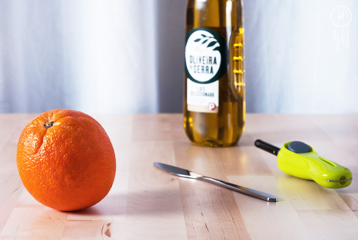
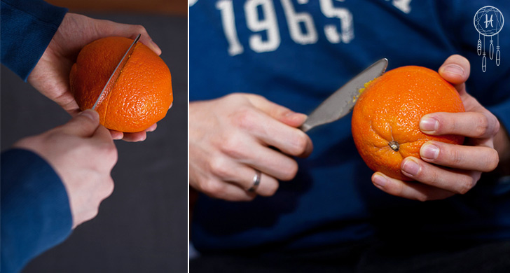
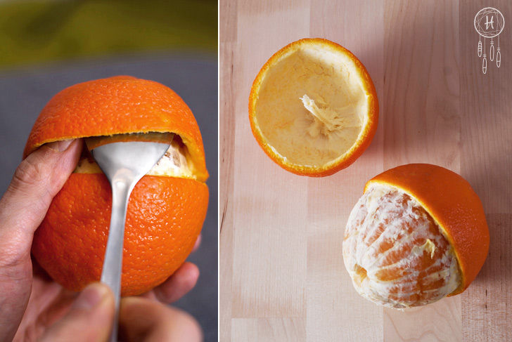
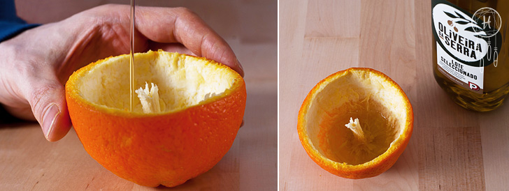
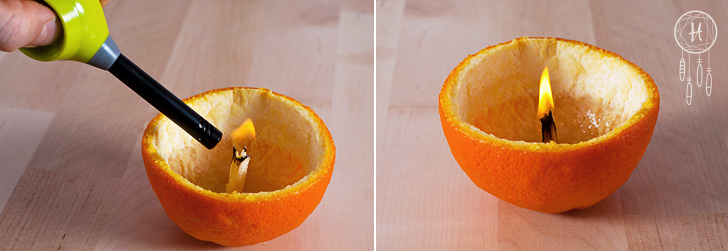
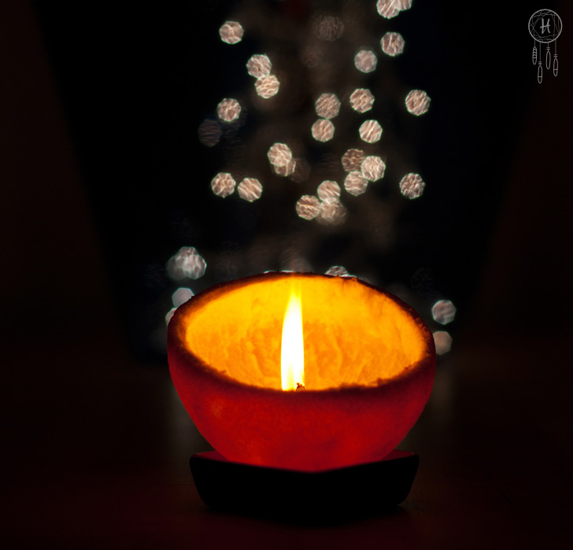

We advise you to gather all necessary stuff to prepare your orange candle. It will be a good idea to prepare some free space on the kitchen table and put a dinner plate on it so that there is less cleaning after an orange juice will be spilled everywhere.
Grab an orange and cut it around more or less in the middle. Try not to cut an orange inside just the skin for that will help you to continue your work without the juice dripping profusely all over your hands.
We have discovered that it is much easier to separate the skin when you undermine it around with a big spoon first. If you do it evenly and carefully you will have a big chance to save the white part (which works as a wick), and it won’t come off easily.
Pour a small amount of olive oil inside and wait a minute or two until the skin and wick soak with oil. It is really important that you wait because if you do it too soon you will burn the biggest part of your wick and there won’t be enough of it left to burn nicely.
Usually you have to try few times before it inflames for good but be stubborn and don’t give up!
 